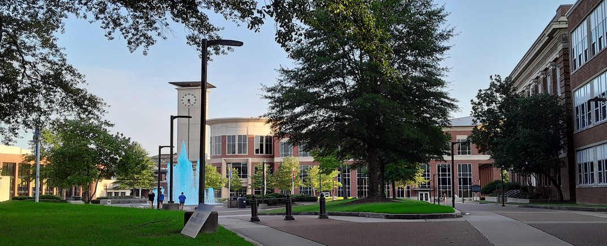

Weizi Li / Research

SparRL: Graph Sparsification via Deep Reinforcement Learning
Technical Report
Data-driven Graph Filter based Graph Convolutional Neural Network Approach for Network-Level Multi-Step Traffic Prediction
Transportation Research Board 101st Annual Meeting, 2022
Gradient-Free Adversarial Training Against Image Corruption for Learning-based Steering
NeurIPS, 2021
Assessing inequality, irregularity, and severity regarding road traffic safety during COVID‑19
Nature Scientific Reports, 2021
Black-box Adversarial Attacks on Network-wide Multi-step Traffic State Prediction Models
IEEE International Conference on Intelligent Transportation Systems, 2021
Vehicle Trajectory Prediction Using LSTMs with Spatial-Temporal Attention Mechanisms
IEEE Intelligent Transportation Systems Magazine, 2021
Spatial-temporal Analysis of COVID-19's Impact on Human Mobility: the Case of the United States
The 20th and 21st Joint COTA International Conference of Transportation Professionals, 2021
A Survey on Visual Traffic Simulation: Models, Evaluations, and Applications in Autonomous Driving
Computer Graphics Fourm, 2020
Efficient Data Collection and Accurate Travel Time Estimation in a Connected Vehicle Environment via Real-Time Compressive Sensing
Journal of Big Data Analytics in Transportation, 2019
ADAPS: Autonomous Driving Via Principled Simulations
IEEE International Conference on Robotics and Automation, 2019
Predicting Station-Level Bike-Sharing Demands Using Graph Convolutional Neural Network
Transportation Research Board 98th Annual Meeting, 2019
A Compressive Sensing Approach for Connected Vehicle Data Capture and Recovery and its Impact on Travel Time Estimation
Transportation Research Board 98th Annual Meeting, 2019
Estimating Urban Traffic States Using Iterative Refinement and Wardrop Equilibria
IET Intelligent Transport Systems, 2018
Estimating Traffic Conditions At Metropolitan Scale Using Traffic Flow Theory
Transportation Research Board 97th Annual Meeting, 2018
City-Scale Traffic Animation Using Statistical Learning and Metamodel-based Optimization
SIGGRAPH Asia, 2017
Citywide Estimation of Traffic Dynamics Via Sparse GPS Traces
IEEE Intelligent Transportation Systems Magazine, 2017
Virtualized Traffic at Metropolitan Scales
Frontiers in Robotics and AI, 2015
Biologically-Inspired Visual Simulation of Insect Swarms
Eurographics, 2015
Parameterized Memory Models / Individual Differences
Virtual Crowds: Steps Toward Behavioral Realism, 2015
Using a Parameterized Memory Model to Modulate NPC AI
Intelligent Virtual Agents, 2013
Virtual Humans: Evolving with Common Sense
Motion in Games, 2012
The Virtual Apprentice
Intelligent Virtual Agents, 2012
Crowd Distribution and Location Preference
Computer Animation and Social Agents, 2012
Populations with Purpose
Motion in Games, 2011